\[
\begin{bmatrix} Y & X \\ X\transpose & Z \end{bmatrix}\begin{Bmatrix} A \\ B \end{Bmatrix} = \begin{Bmatrix} G \\ F \end{Bmatrix}
\]
\(X = -\Re\left(P\herm T\right)\)
\(Y=P\herm P\)
\(Z=T\herm T\)
\(G=\Re\left(P\herm W\right)\)
\(F = \Re\left(T\herm W\right)\)
Does RFP Work?
Code
# %% Load some data# You should experiment with these:sensor ="LTC-05"# single test, single repeat, single sensordata = hawk_tools.get_hawk_data("LMS", "BR_AR", 1, 1)["BR_AR_1_1"][sensor]# Try changing the sensorH = data["Frequency Response Function"]["Y_data"]["value"]w = data["Frequency Response Function"]["X_data"]["value"]H_units = data["Frequency Response Function"]["Y_data"]["units"]# plot the FRFfig, axs = plt.subplots(2, 1, figsize=(8, 5))axs[0].semilogy(w, np.abs(H))axs[1].plot(w, np.angle(H))axs[0].set_xlabel(r"$\omega$ (Hz)")axs[1].set_xlabel(r"$\omega$ (Hz)")axs[0].set_ylabel(r"$|H(\omega)|$ ({})".format(H_units))axs[1].set_ylabel(r"$\angle H(\omega)$ ({})".format(H_units))axs[0].set_xlim([0, 160])axs[1].set_xlim([0, 160])plt.tight_layout()plt.show()
Using cached version: ./.hawk_data\LMS_BR_AR_1_1.hd5
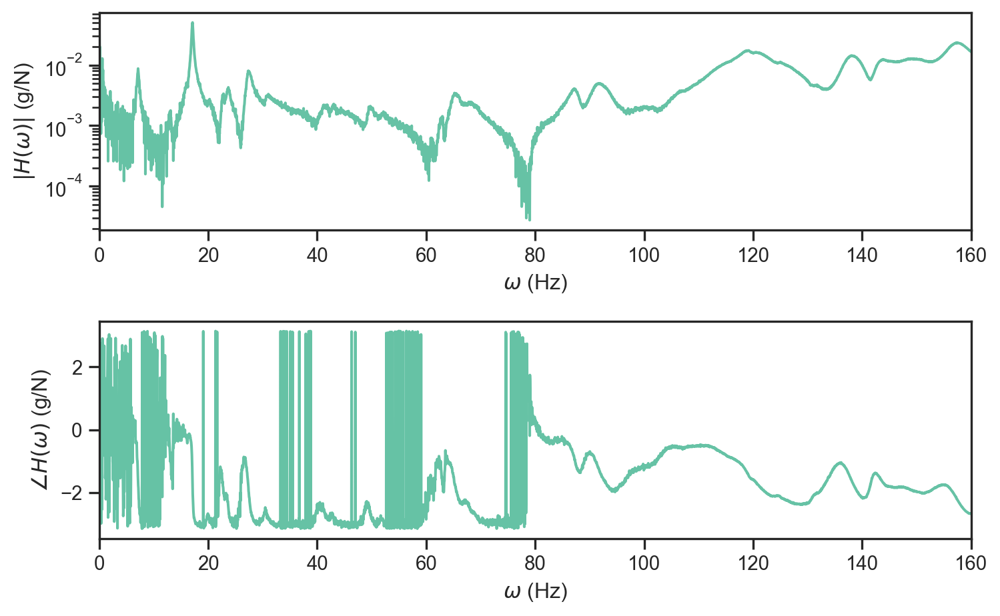
Implementing RFP
# Rational fraction polynomial modeldef RFP(H, w, n_modes, oob_terms=0):# Specify the orders of our approximation m = ( n_modes *2+1+ oob_terms ) # number of coefficients in the numerator polynomial n = ( n_modes *2+1 ) # number of coefficients in the denominator -1 because we fix b_n=1# complex frequency vector iw =1j* w# Build monomial basis matricies Phi_a = iw[:, None] ** np.arange(m) Phi_b_all = iw[:, None] ** np.arange(n) Phi_b = Phi_b_all[:, :-1] # ignore last column because bn=1# preallocate some calculations for speed Phi_bH = Phi_b * H[:, None] Hiwn = H * Phi_b_all[:, -1] D =-HT(Phi_a) @ (Phi_bH)# form the block matricies M = np.block([[HT(Phi_a) @ Phi_a, D], [D.T, HT(Phi_bH) @ (Phi_bH)]]) x = np.block([HT(Phi_a) @ Hiwn, -HT(Phi_bH) @ Hiwn])# Solve and extract the coefficients of the polynomials AB = np.linalg.solve(np.real(M), np.real(x)) a = AB[:m, None] b = np.append(AB[m:], 1)[:, None]# Generate the predicted FRF H_pred = (Phi_a @ a) / (Phi_b_all @ b)# Pull out the modal porperties roots_b =sorted(np.roots(np.flip(b[:, 0])))[ ::-2 ] # remove every other becaus they are conj pairs wns = np.abs(roots_b) zetas =-np.real(roots_b) / wnsreturn H_pred, wns, zetas
The moment of truth
modes =10oob =0w_low =5w_high =180# fit the modelidx = np.logical_and(w > w_low, w < w_high)H_pred, wns_pred, zetas_pred = RFP(H[idx], w[idx], n_modes=modes, oob_terms=oob)
More Modes Will Help?
modes =30oob =0w_low =5w_high =180# fit the modelidx = np.logical_and(w > w_low, w < w_high)H_pred, wns_pred, zetas_pred = RFP(H[idx], w[idx], n_modes=modes, oob_terms=oob)
and backwards in time, \[
\bar{\Sigma} = A\transpose\bar{\Sigma}A - (C\transpose - A\transpose\bar{\Sigma}\bar{C}\transpose)(\Lambda(0) - \bar{C}\bar{\Sigma}\bar{C}\transpose)\inv (C\transpose - A\transpose\bar{\Sigma}\bar{C}\transpose)\transpose
\]
It then transpires that the canoncial correlations betweent the “future” and “past” are the square roots of the eigenvalues of \(\Sigma\bar{\Sigma}\). We can exploit this to use CCA for determining \(A\) and \(C\) (and the other system properties).
# single test, single repeat, single sensordata = hawk_tools.get_hawk_data("NI", "RPH_AR", 1, 1)["RPH_AR_1_1"]y = []for key, sensor in data.items():if key[:3] in {"EXH", "FRC", "TRI", "Met"} or key[0] =='L':continue# skip some sensor channels y.append(sensor["Measurement"]["value"])y = np.array(y)y_units = data["LTC-01"]["Measurement"]["units"]dt =1/int(data["Meta"]["Acquisition Sample Rate"])# plot the time seriesplt.figure(figsize=(8, 5))plt.plot(y.T - np.mean(y,axis=1)[None,:], linewidth=0.75)plt.ylabel(f"Acceleration ({y_units})")plt.show()# note the 10 repeats in the series
Using cached version: ./.hawk_data\NI_RPH_AR_1_1.hd5
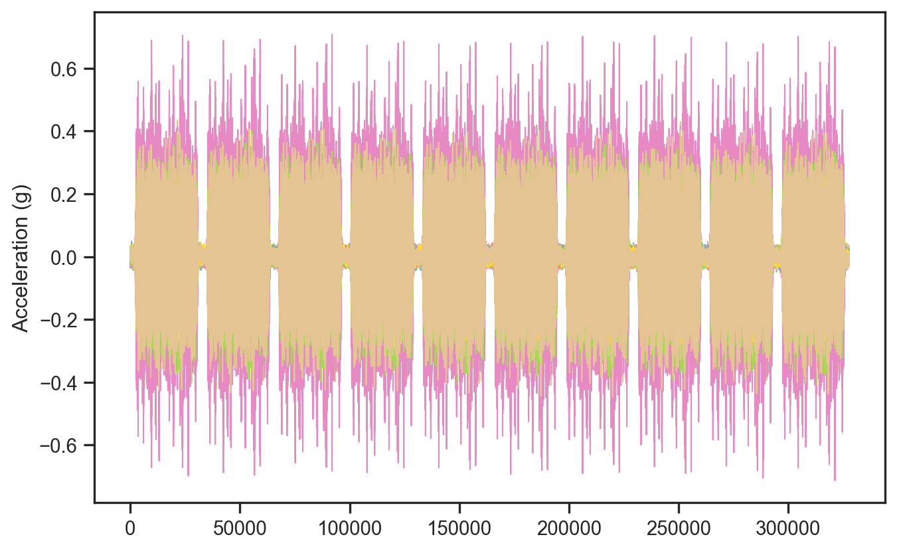
Hawk SSI Example
A brief aside on Singular Value Spectra
Code
nfft =10000sensor_idx =slice(None) # will be slow for all sensors# Compute CPSD to (N/2, P, P) tensoryc = y[sensor_idx, :50000] - np.mean(y[sensor_idx,:],axis=1)[:,None]cpsd = np.zeros( (int(nfft /2) +1, yc.shape[0], yc.shape[0]), dtype=complex)# This can take ~2 minutes to compute for all sensorsfor i, sig1 inenumerate(yc):for j, sig2 inenumerate(yc): f, cpsd[:, i, j] = csd(sig1, sig2, fs=1/ dt, nperseg=nfft, noverlap=None)_, SVS, _ = np.linalg.svd(cpsd)#%% Plot singular valued spectrumplt.figure(figsize=(8,5))plt.semilogy(f, SVS[:,:5])plt.ylabel('$|H|$')plt.xlabel('$\omega$')plt.xlim([0, 160])plt.ylim([1e-7, 1e-2])plt.tight_layout()plt.show()
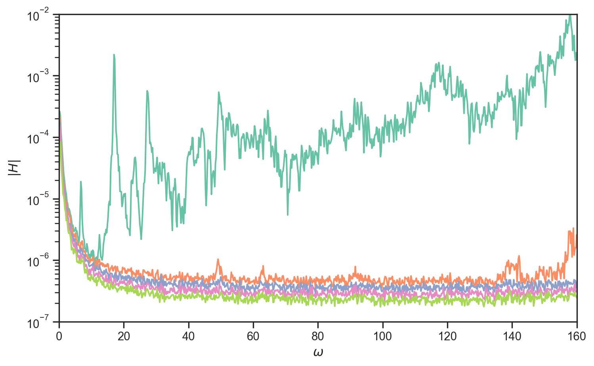
SSI Results
Code
# you should experiment with these:sensor_idx =slice(None) # will be slow for all sensorsdecimate_factor =10# speed up by increasing thismax_order =60compute_orders =-1# -1 => compute all ordersy_dc = y[sensor_idx, ::decimate_factor]dt_decimated = dt * decimate_factoropts = {"max_model_order": max_order,"model_order": compute_orders,"dt": dt_decimated,}alg = ssi.SSI(opts)props = alg(y_dc)
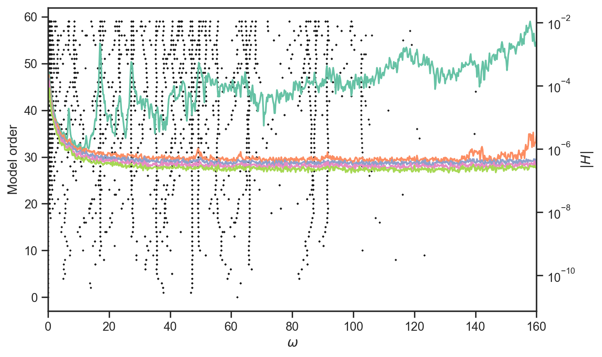
OK But Why Do We Care?
Dynamic properties will be sensitive to the sorts of damage we are looking for.
Cracks cause local loss in stiffness and roughly speaking we have,
\[
\omega_n = \sqrt{\frac{k}{m}}
\]
So changes in the system dynamics should directly relate to the sort of signatures from damage
Begin with the most basic approach
<matplotlib.legend.Legend at 0x1be44ddfcd0>
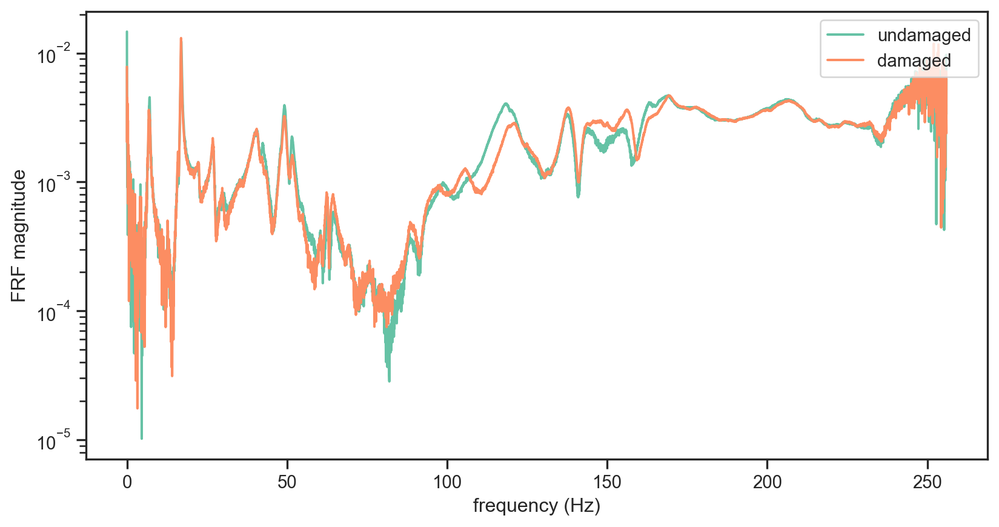
Refining the Feature Set
Now, although we’ve now seen that the FRF is sensitive to damage, using the entire FRF would mean an 8192 dimensional feature vector. We can be a bit more clever, and focus on just one peak (e.g. a natural frequency) of the FRF plot that is sensitive to damage. For instance, if we zoom into ~ 156Hz
Text(0, 0.5, 'FRF magnitude')
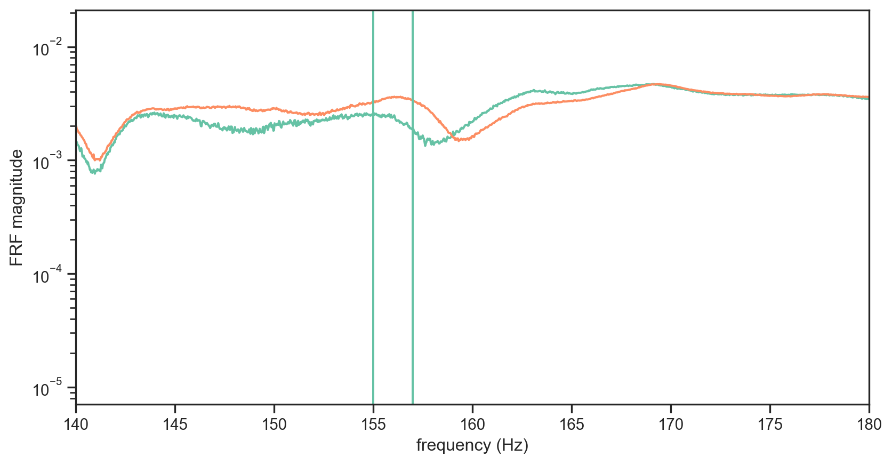
Outlier Analysis
Code
# train novelty detector on range of undamaged, test on most severe damage. # construct reference/training values as every other undamaged casereference_data = spectral_bands_undamaged[1::2,:]damaged_data = spectral_bands_damaged[60:,:]reference_data_amp = test_amplitude_undamaged[1::2]damaged_data_amp = test_amplitude_damaged[60::]damaged_data_severity = test_damage_severity[60::]# calculate statistics of this data setmu = np.mean(reference_data,0)cov = np.cov(reference_data.T)cov_inv = np.linalg.inv(cov)# calculate their novelty indexreference_novelty = np.zeros_like((reference_data[:,0]))damaged_novelty = np.zeros_like((damaged_data[:,0]))for i inrange(0,len(reference_data)): reference_novelty[i] = mahalanobis(reference_data[i,:],mu,cov_inv)for i inrange(0,len(damaged_data)): damaged_novelty[i] = mahalanobis(damaged_data[i,:],mu,cov_inv)n =int(reference_data.shape[0])p =int(reference_data.shape[1])threshold = outlier_threshold(95,n,p)x = np.arange(0,len(reference_novelty)+len(damaged_novelty))y = np.hstack((reference_novelty,damaged_novelty))plt.figure()plt.scatter( x[0:len(reference_novelty)],y[0:len(reference_novelty)],marker ='o',label ='undamaged' )plt.scatter( x[len(reference_novelty):],y[len(reference_novelty):],marker ='o',label ='damaged' )plt.axhline(y = threshold,linestyle ='--',color ='k',alpha =0.85)plt.axvline(x =len(reference_novelty),linestyle ='--',color ='k',alpha =0.85)plt.xlabel('data point #')plt.ylabel('novelty index')plt.legend(loc ='upper left')
<matplotlib.legend.Legend at 0x1be4508c220>
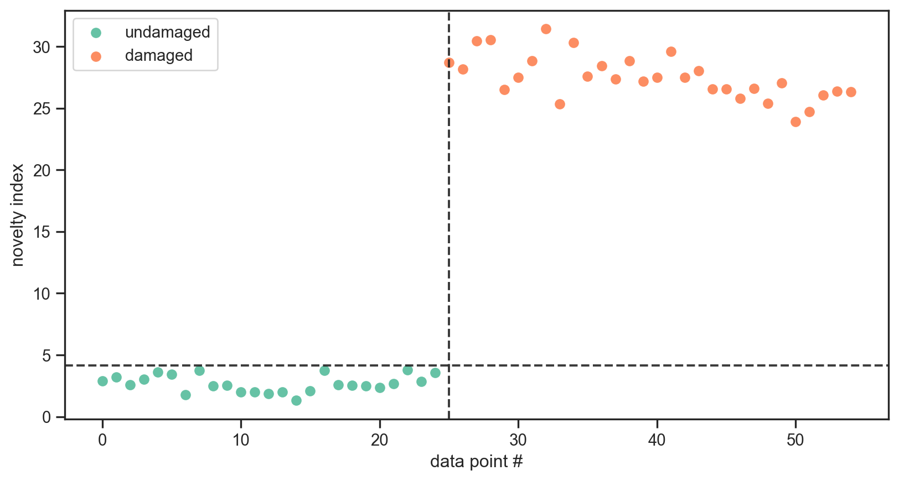
It’s Not Necessarily That Simple
Code
# %% train novelty detector on range of undamaged, test on range of undamage and damage data. # construct reference values as every other undamaged casereference_data = spectral_bands_undamaged[1::2,:]undamaged_data = spectral_bands_undamaged[0::2,:]damaged_data = spectral_bands_damagedreference_data_amp = test_amplitude_undamaged[1::2]undamaged_data_amp = test_amplitude_undamaged[0::2]damaged_data_amp = test_amplitude_damageddamaged_data_severity = test_damage_severity# calculate statistics of this data setmu = np.mean(reference_data,0)cov = np.cov(reference_data.T)cov_inv = np.linalg.inv(cov)# calculate their novelty indexreference_novelty = np.zeros_like((reference_data[:,0]))undamaged_novelty = np.zeros((spectral_bands_undamaged.shape[0]-reference_data.shape[0]))damaged_novelty = np.zeros_like((spectral_bands_damaged[:,0]))for i inrange(0,len(reference_data)): reference_novelty[i] = mahalanobis(reference_data[i,:],mu,cov_inv)for i inrange(0,len(undamaged_data)): undamaged_novelty[i] = mahalanobis(undamaged_data[i,:],mu,cov_inv)for i inrange(0,len(damaged_data)): damaged_novelty[i] = mahalanobis(damaged_data[i,:],mu,cov_inv)n =int(reference_data.shape[0])p =int(reference_data.shape[1])threshold = outlier_threshold(95,n,p)# %% plot plot_outlier_analysis(threshold, reference_novelty, undamaged_novelty, damaged_novelty, damaged_data_severity)
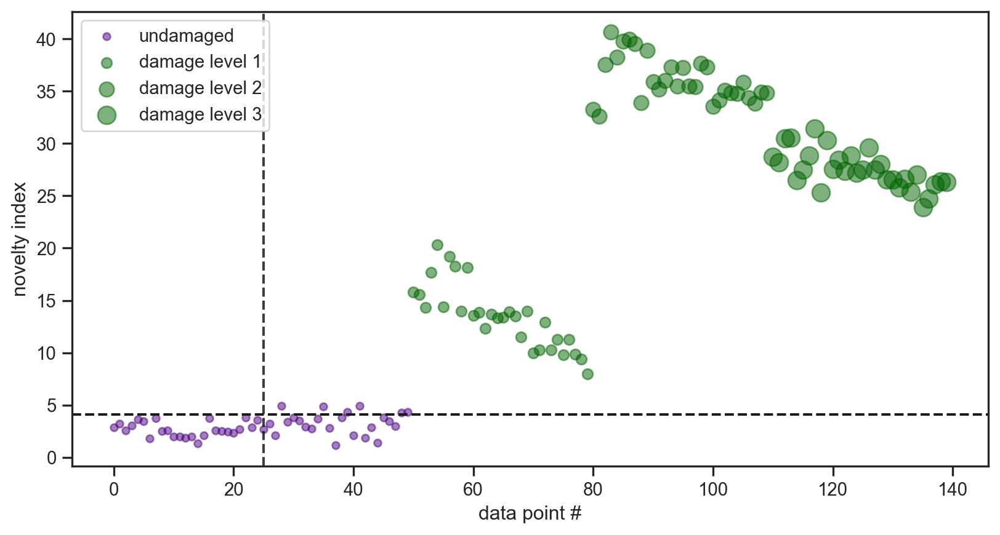
Damage in a Different Location
Let’s take a look at the FRF for one of the DS_RLE tests, and the BR_AR (no damage) test that we looked at earlier.
<matplotlib.legend.Legend at 0x1be0a95ac10>
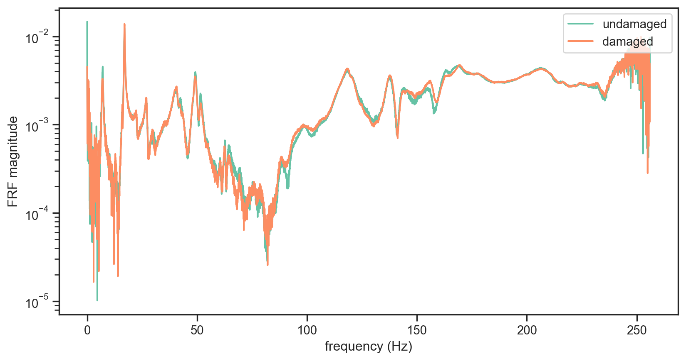
Novelty Detection on Root Damage
ALthough the damage in RLE causes some change in the FRF, it is not as prominent of a change as the earlier damage location (TLE).
U, s, V = np.linalg.svd(wns, full_matrices=0)PCS = U @ np.diag(s)# Plotting the first 2 principal componentsll = ["Baseline", "$M_a=256$", "$M_a=620$", "$M_a=898$"]plt.figure(figsize=(8, 5))for d in [0, 1, 2, 3]: ix = [l["dmg"] == d for l in labs] ss = [20* v["amp"] for i, v inzip(ix, labs) if i] plt.scatter(PCS[ix, 0], PCS[ix, 1], color=f"C{d}", label=ll[d], s=ss)plt.legend( bbox_to_anchor=(0, 1.1, 1, 0), loc="upper left", ncols=4, mode="expand", borderaxespad=0, frameon=False,)plt.xlabel("PC1")plt.ylabel("PC2")plt.tight_layout()
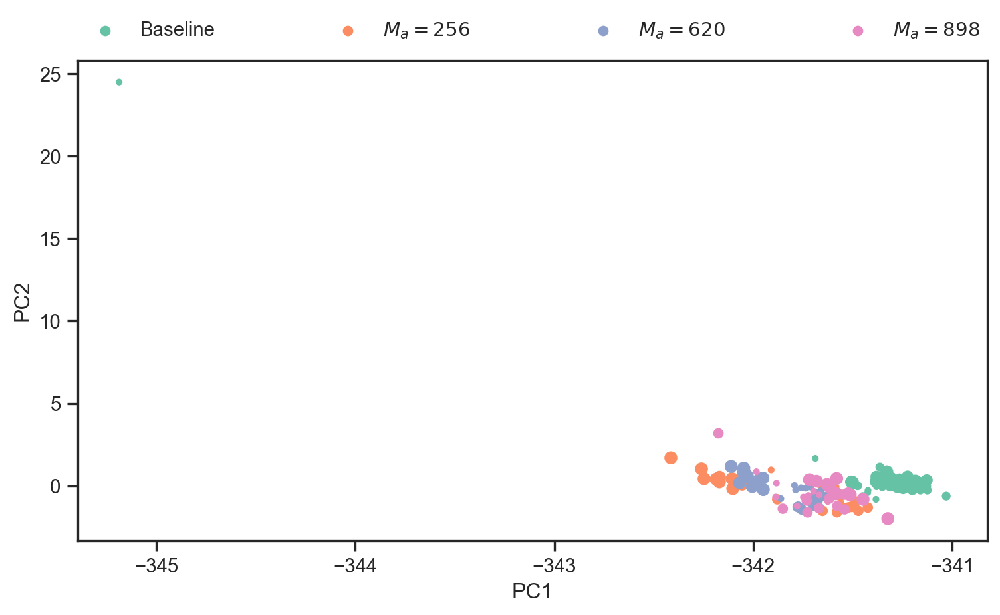
What’s Gone Wrong?
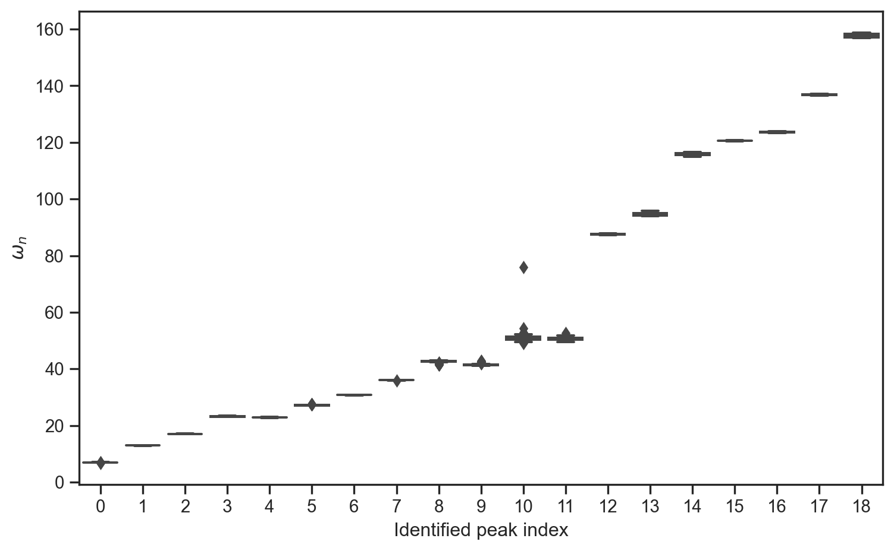
Can we fix it?
Code
# remove the 10th mode from the PCAwns_crop = np.delete(wns, [10], axis=1)# PCA on the reduced datasetU, s, V = np.linalg.svd(wns_crop, full_matrices=0)PCS = U @ np.diag(s)# Plotting the first 2 principal componentsll = ["Baseline", "$M_a=256$", "$M_a=620$", "$M_a=898$"]plt.figure(figsize=(8, 5))for d in [0, 1, 2, 3]: ix = [l["dmg"] == d for l in labs] ss = [20* v["amp"] for i, v inzip(ix, labs) if i] plt.scatter(PCS[ix, 0], PCS[ix, 1], color=f"C{d}", label=ll[d], s=ss)plt.legend( bbox_to_anchor=(0, 1.1, 1, 0), loc="upper left", ncols=4, mode="expand", borderaxespad=0, frameon=False,)plt.xlabel("PC1")plt.ylabel("PC2")plt.tight_layout()
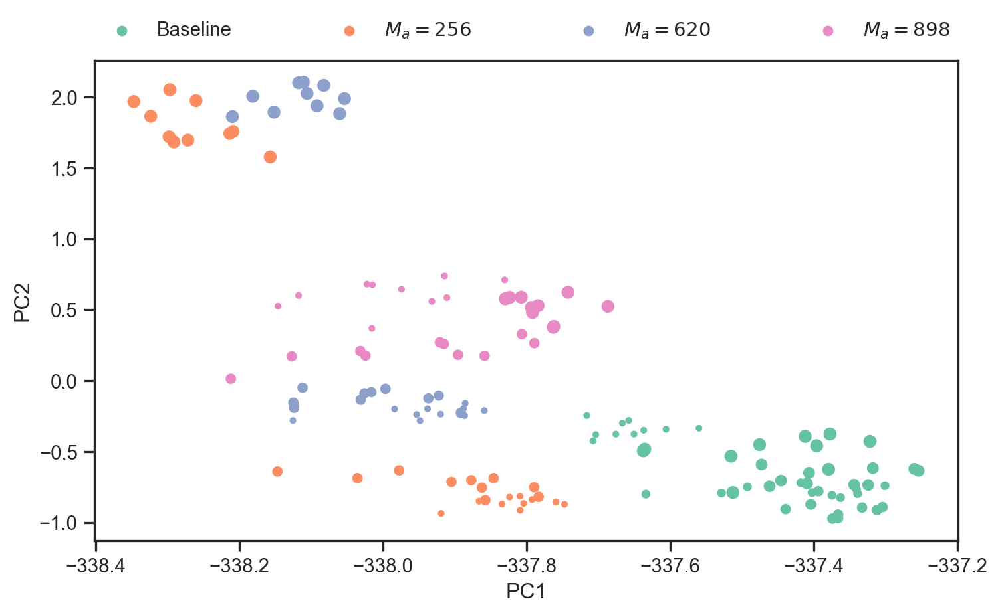
Using This Information
Code
X = PCS[:,:2]clusters = [NIW( mu = np.array([-337.6,-0.5])[None,:], sigma = np.eye(2), nu =2, kappa =1)]clusters[0].add_data(X[:50,:2])mu, Sig = clusters[0].map_estimates()plt.figure()ax = plt.gca()ax.scatter(PCS[:,0],PCS[:,1], c=-clusters[0].logpredpdf(PCS[:,:2]))plot_gaussian(ax, mu, Sig)